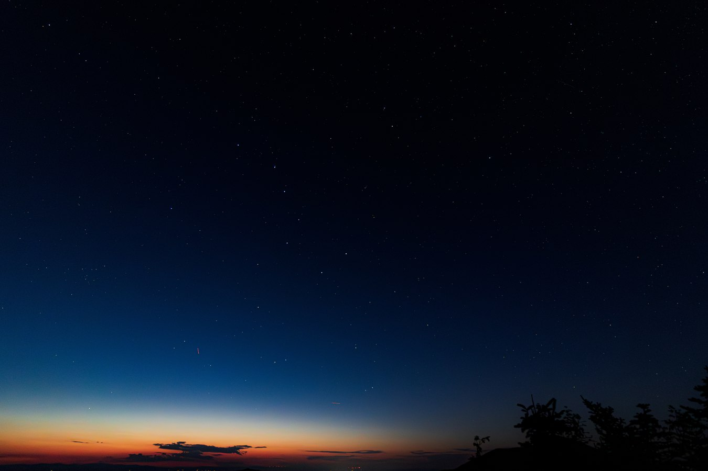
𐓀𐓘̋͘𐓹𐓟 · Cielo · Sky
Content warning: this series ends with photographs of a solar eclipse. They stay hidden unless you choose to see them.
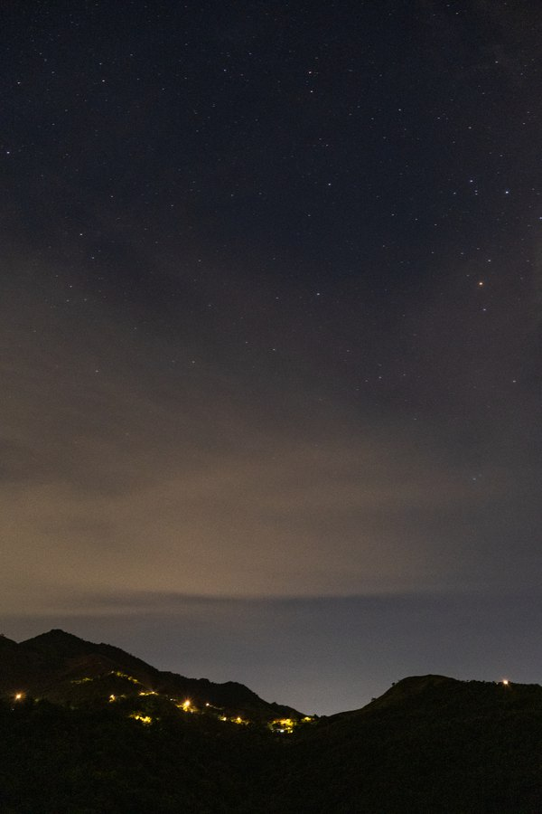
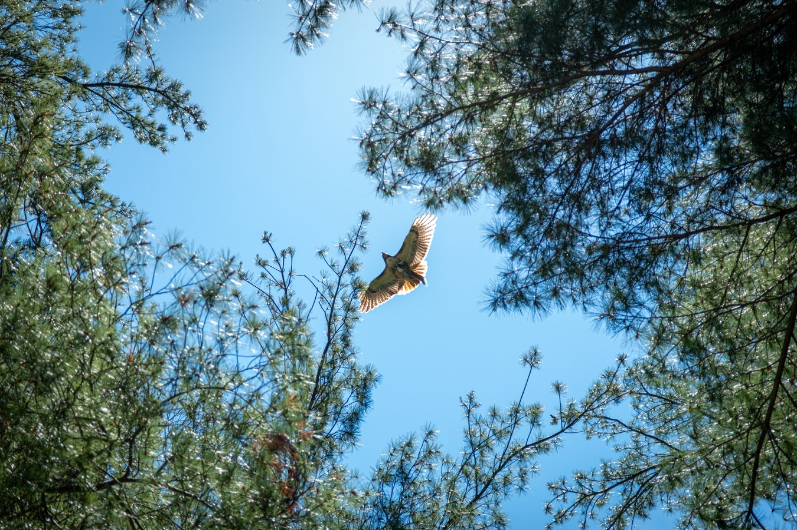
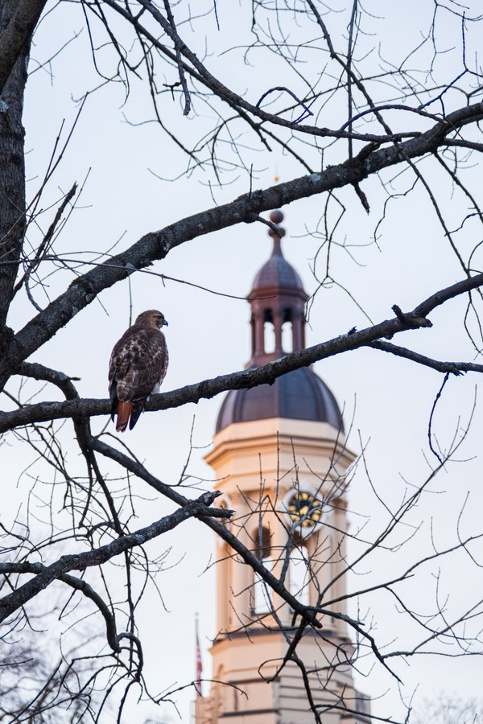
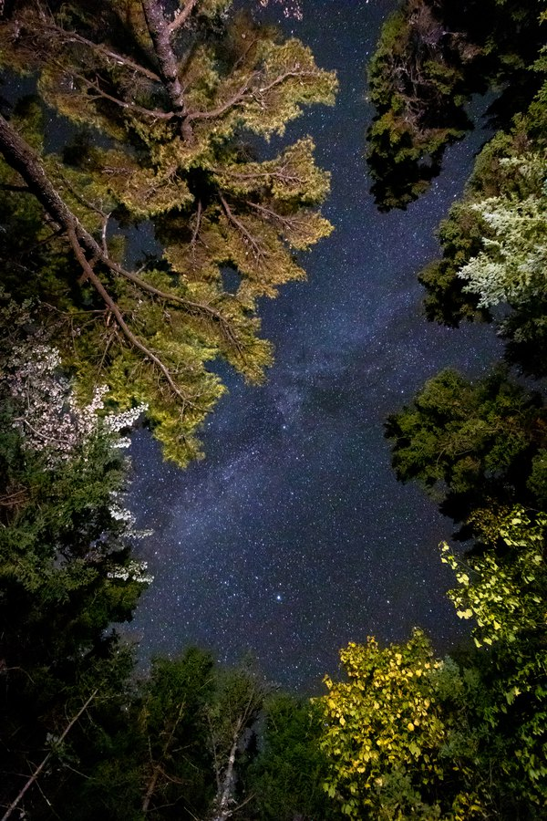
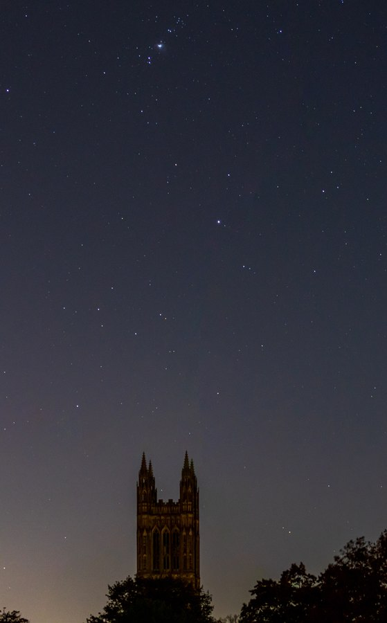
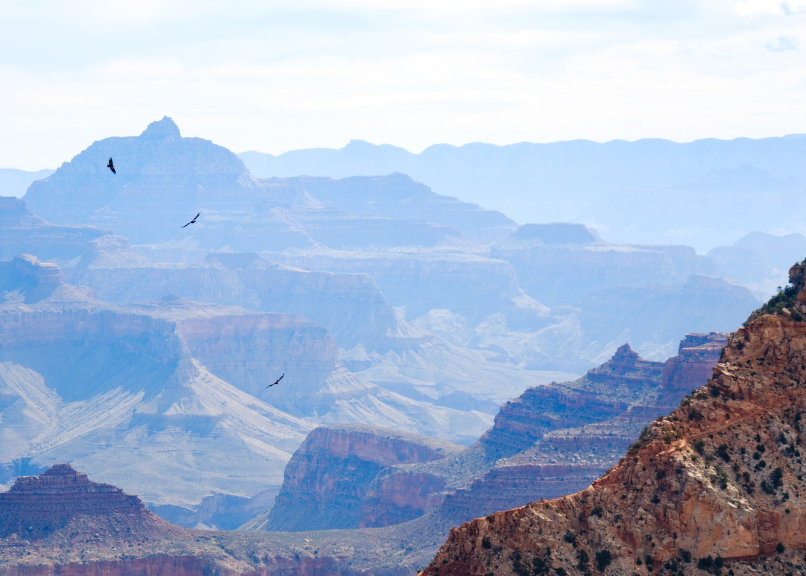
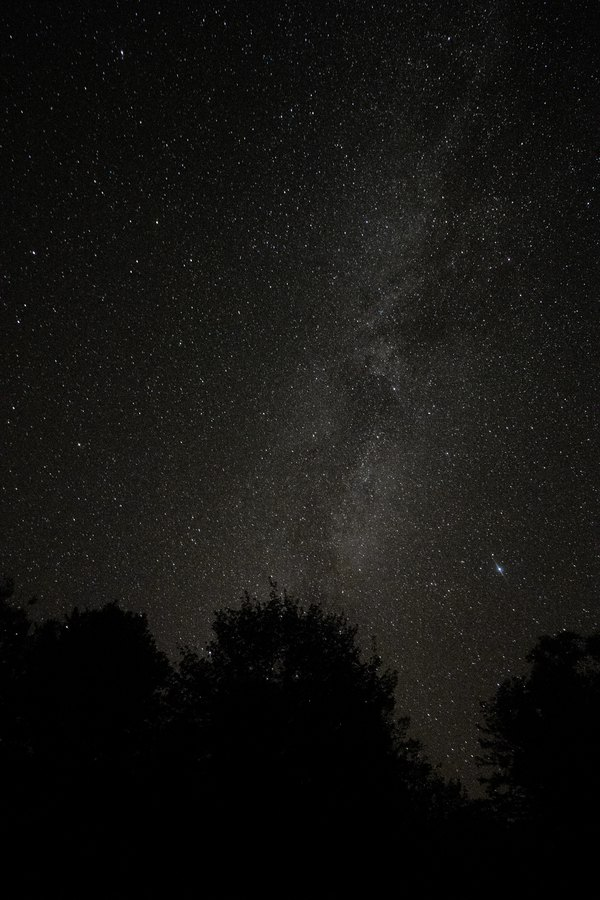
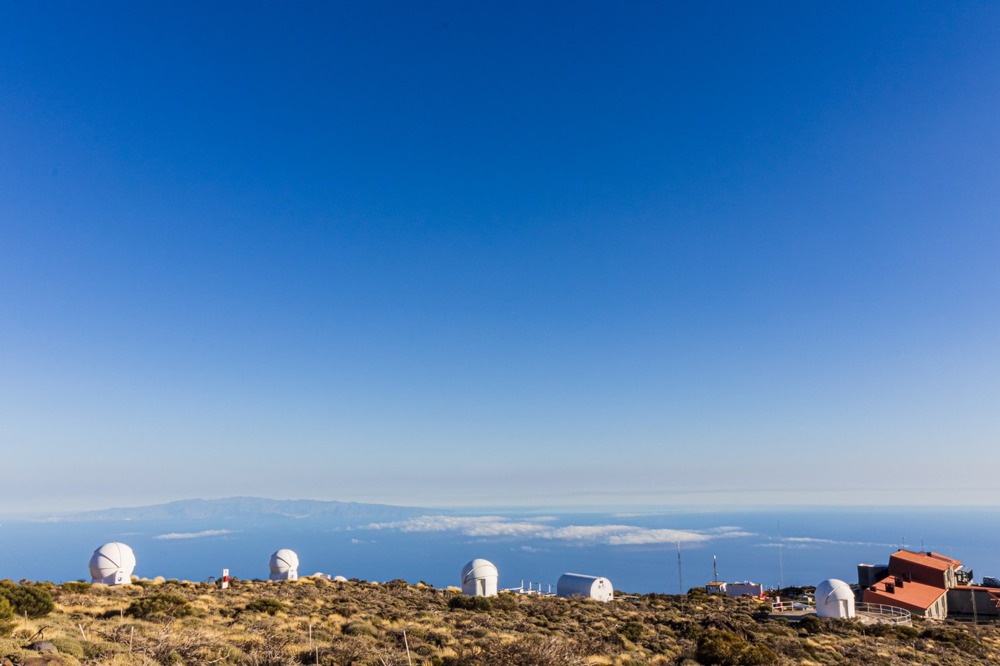
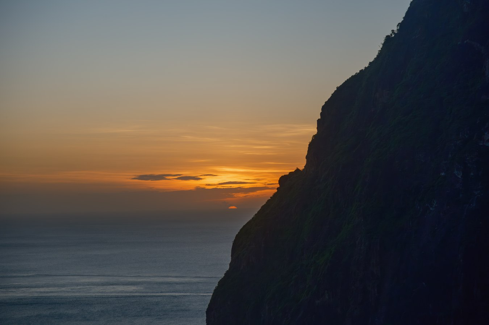
Content warning for our Diné and other observant relatives: the photographs past this point show a solar eclipse.
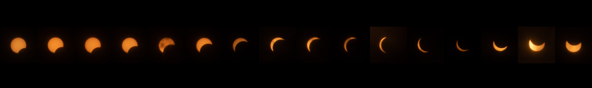
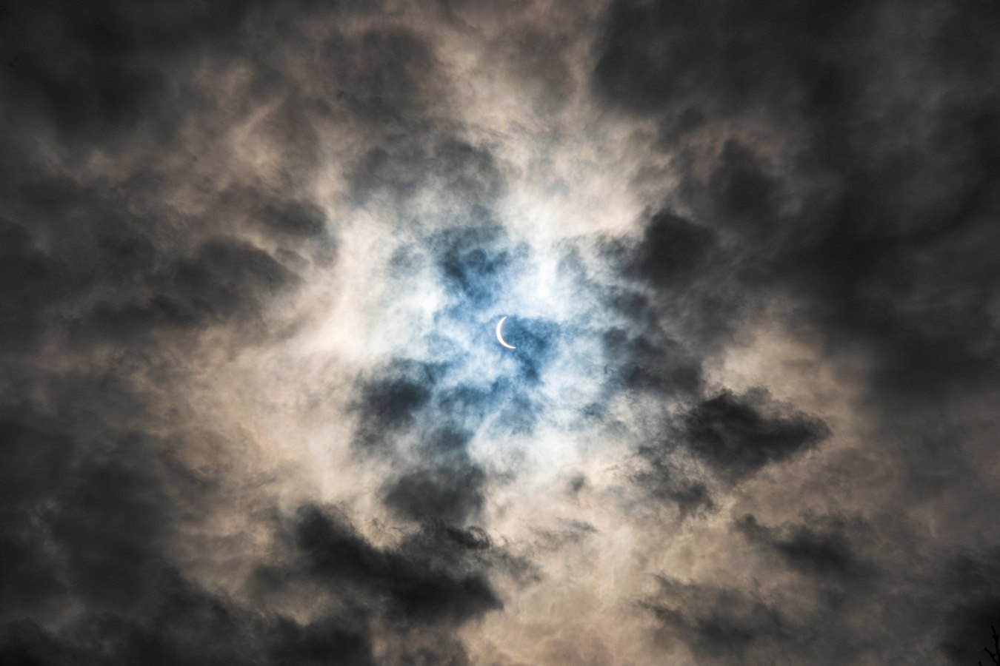
 𐓁𐓣́𐓥𐓘𐓯𐓣𐓟 · Gente · People
𐓁𐓣́𐓥𐓘𐓯𐓣𐓟 · Gente · People